The plan in PR #968, drawn in the D8 style, then the app as it is today. Nothing in the first two sections is built yet.
The small flag shows the target language and the question reads "seven in Spanish". The answers are the same word in different languages. Picking lifts a button into its pressed state and wakes Check. After Check, each answer turns into a wide tile in its own flag. The right answer gets a green ring and ✓, a wrong pick gets a red ring and ✕, and every tile but the right one dims slightly.
seven
The name under each flag stays until you match that language right 3 times.
The 15 kinds the engine asks, in the D8 card, before you answer. The line above each card says when the engine picks it. Answers turn into wide language tiles after Check, as in the card above.
The first time a word comes up.
seven
Reviews 0 and 1, and after a lapse. Later for non-Latin scripts.
Reviews 0 and 1 when the word shares a root across your set.
Review 2, half the time.
Review 2, the other half. Most reviews in non-Latin scripts.
pick the meaning
Later reviews, when the word has a gapped sentence.
Tengo libros.
I have seven books.
Later reviews, about one in five, when a sentence uses the word.
I have seven books.
Later reviews, about one in four, for sentences of 3 to 12 words.
I have seven books.
Later reviews in Latin scripts.
Later reviews in Latin scripts, the remainder.
Later reviews in Latin scripts when speech is on.
From review 1, about one in three, for words with a look-alike.
What does it mean?
Every noun item.
casa
house
Every verb item. Buttons at first, typed after.
to speak · present
yo
The match stage, one word across every language in the set.
The square tile holds one word. Words over 7 letters step the type down, as D8's .long size does. Anything with a space, or over 12 letters, moves to the wide tile, the same tile answers turn into. The tile never grows past the card and never cuts a word.
Mathematics, physics, chemistry, information, biophysics, cosmology, mind and learning to learn all ask one kind of question: a prompt at one of four levels, recall, apply, derive and teach, then you show the answer and rate yourself. Each branch gets a pigment tile in place of a flag. Same buttons, same type.
The best linear approximation to a function near a point: the slope of the tangent line.
State the derivative as a limit, and say what geometric object it computes.
State the derivative as a limit, and say what geometric object it computes.
The slope of the tangent line, the instantaneous rate of change at a.
Derive the first-order energy correction, and show the second-order correction to the ground state is always negative.
Key result. En(1) = ⟨n|V|n⟩, and every term of E0(2) is ≤ 0.
Write Ĥ = Ĥ0 + λV and expand ψn = |n⟩ + λ|n(1)⟩ + … Insert into the Schrödinger equation and collect powers of λ. Order λ¹ gives…
1,094 math pieces in the live decks render like this.
A typeset math view for equations, and full inline coverage.
Three plain groups with counts: due now, new today, done. Each row says what it holds in words.
Due now
New today
Done
What is on your iPhone now, after the tile experiment was reverted. Swipe sideways.
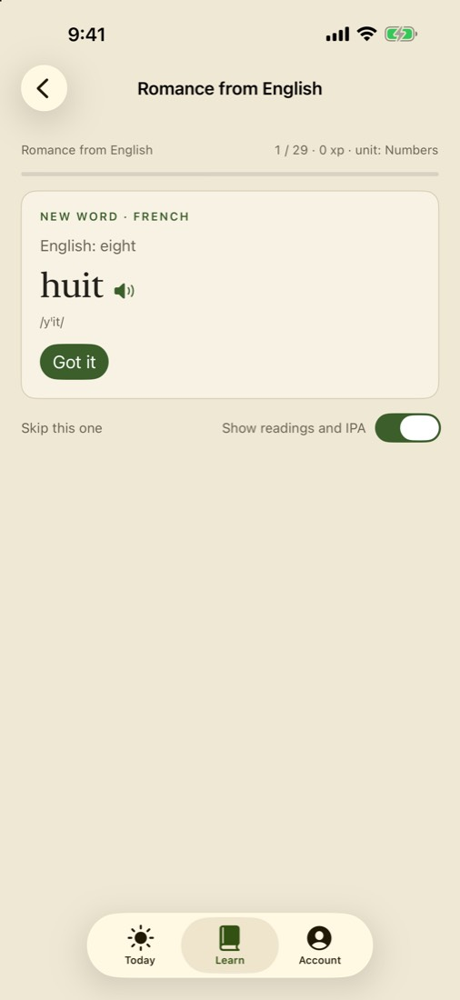
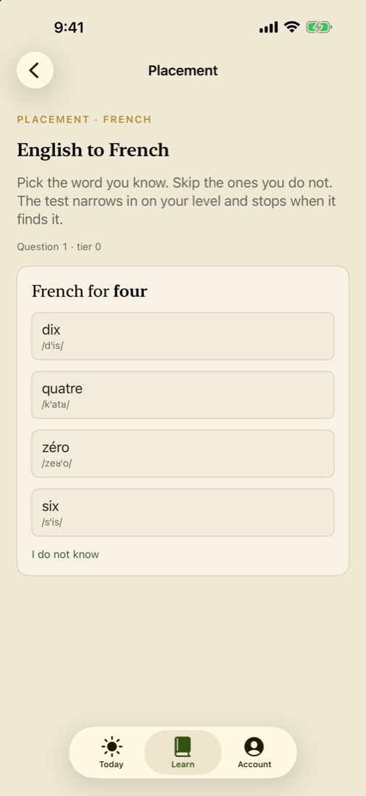
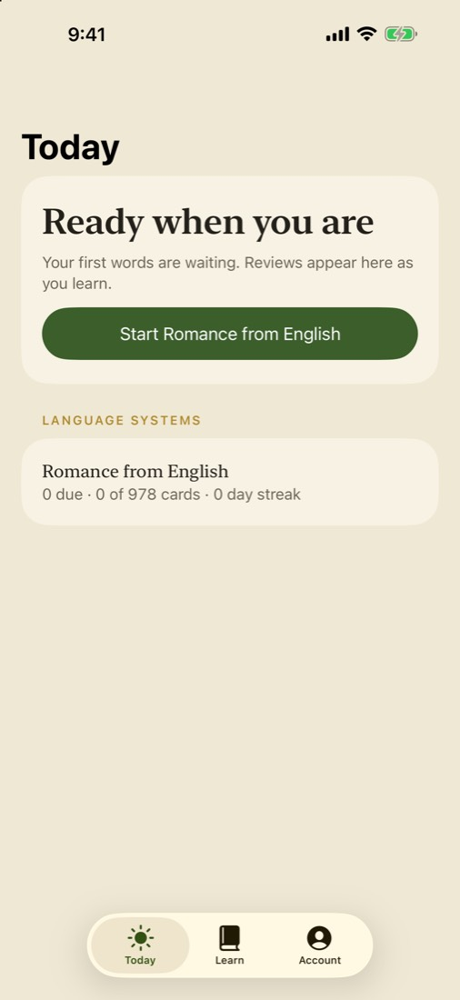
Uploaded to App Store Connect for Bucket 2.0 and Polingual 1.0.
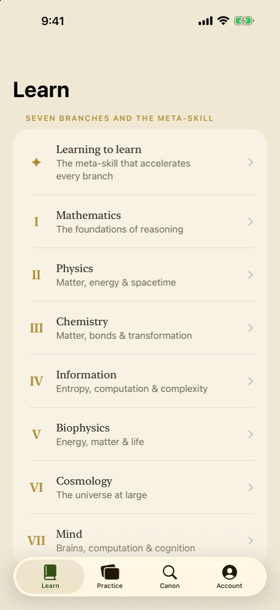
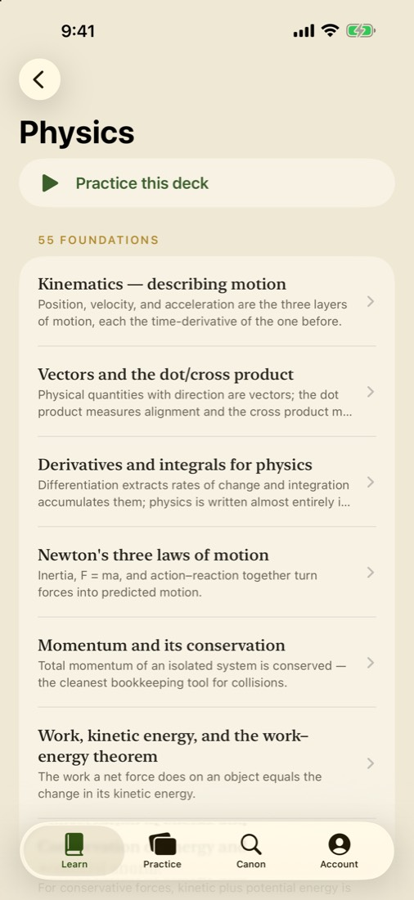
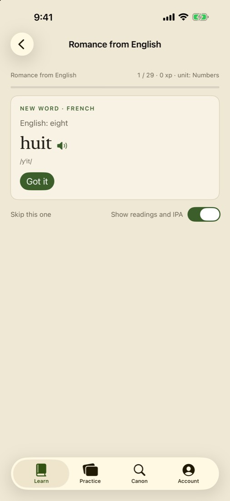
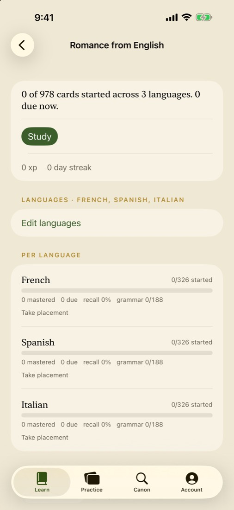
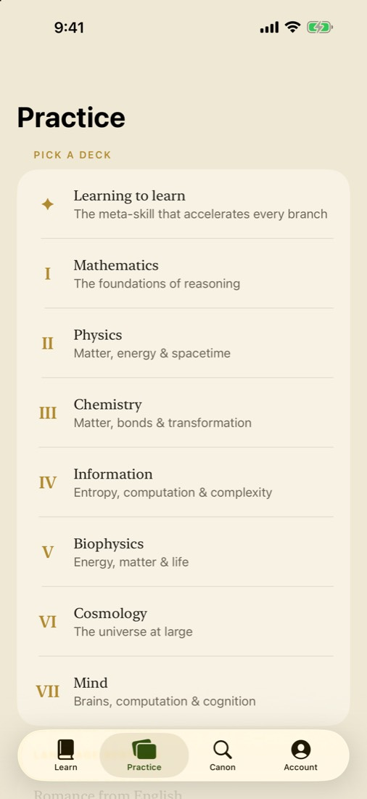
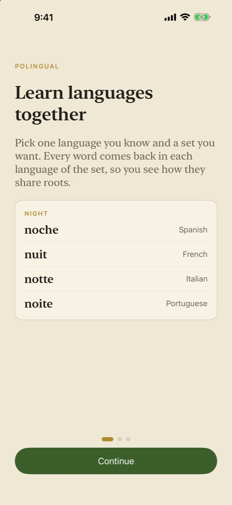
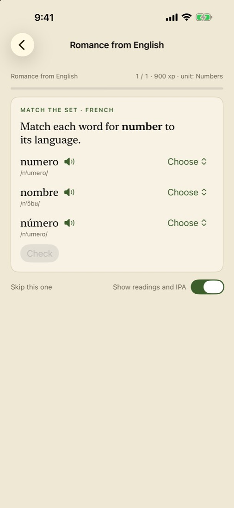
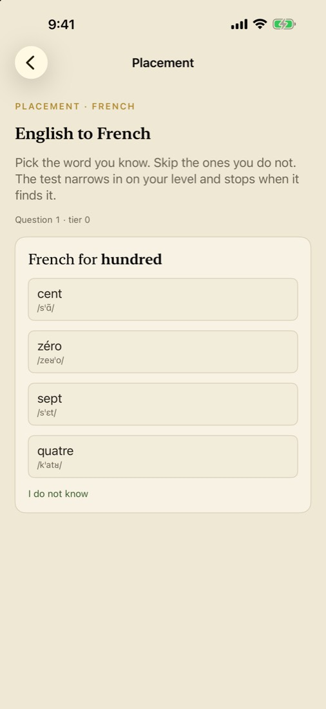
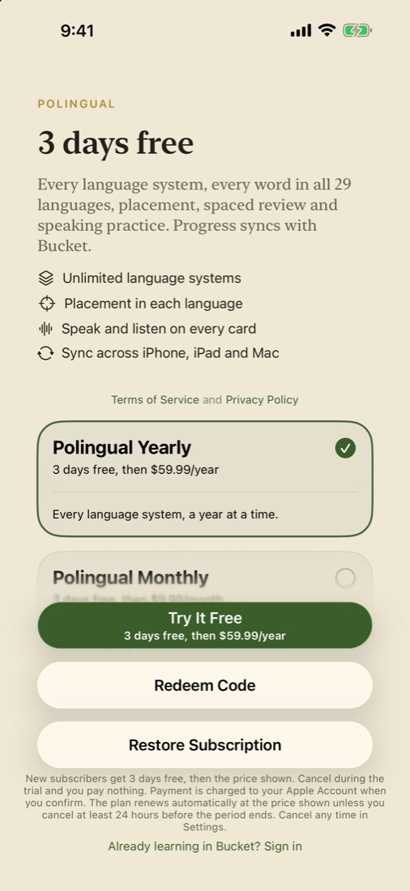